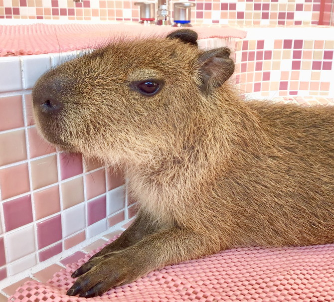

一流シェフが
一流の料理を提供
本場フランスの一流レストランで学んだシェフが 日本のおもてなし精神とフランスのホスピタリティで料理を提供します
About Kapiko

食事を通して幸せな時間を提供したいという想いから料理人になりました。
Career
フランスで生まれ、学生時代から両親のレストランを手伝っていました。
レストランで働く中、料理人になることを目指すようになりました。
日本に帰国後は、スーパーでバイトをしながら、親戚のレストランで修行していました。
カピぞうとの結婚後、カピぞうが生産した新鮮な野菜を活かした当レストランを開業しました。
Belief
自分で経営している農家で収穫した野菜を使用することで、健康にやさしく、おいしい料理を提供します。
また、料理の品質だけでなく、お客様が幸せな時間を過ごしてもらえるようなおもてなしを致します。
Skill
フランス料理、日本料理両方の鍛錬を積んできました。
それぞれの料理の良さを引き出せるように、調理方法、味付けの融合を行っています。
お客様に新しい味を楽しんでいただけるように日々研究を続けております。